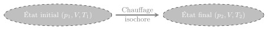
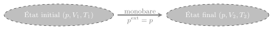
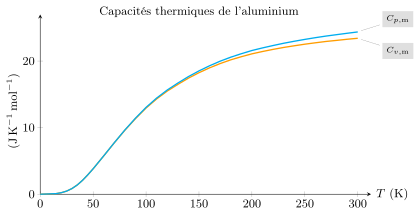

Considérons un système fermé, homogène et de composition invariable.
Pensez par exemple à un bloc de fer, un volume d’eau ou à un volume d’air. On suppose que
seules les forces de pression travaillent de sorte que ces systèmes sont décrit par les
variables \(p\), \(V\) et \(T\).

Transformation isochore.
Chauffons un tel système en maintenant son volume constant. Lors de ce processus isochore,
le système reçoit un transfert thermique :
$$
\quad Q_\text{v} = \Delta U
$$
car
$$
\quad W = - \int p^\text{ext} \mathrm{d}V = 0
$$
Imaginons maintenant un chemin réversible fictif qui part de l’état initial \((p_1,V,T_1)\)
pour arriver vers l’état final \((p_2,V,T_2)\). Au cours de cette transformation, la
variation d’énergie interne entre deux états d’équilibre voisins s’écrit :
$$
\quad \mathrm{d}U = U(T+\mathrm{d}T,V,n) - U(T,V,n)
= \left. \frac{\partial U}{\partial T}\right|_{V,n}\mathrm{d}T
$$
Définition :
La capacité thermique isochore est une propriété extensive définie par :
$$
\quad \boxed{ C_\text{v} \overset{\text{def}}{=}
\left. \frac{\partial U}{\partial T}\right|_{V,n} }
$$
Cette grandeur dépend a priori de \(V\) et \(T\).
On en déduit :
$$
\quad \boxed{ Q_\text{v} = \Delta U = \int_{T_1}^{T_2} C_\text{v} \mathrm{d}T }
$$
La capacité thermique isochore est une propriété extensive. Il est alors naturel de définir
les grandeurs molaires et massiques correspondants :
$$
\quad \underbrace{C_\text{v}}_{\rm{J.K^{-1}}} =
\underbrace{n \times C_\text{v,m}}_{\rm{mol} \times \rm{J.K^{-1}.mol^{-1}}}
= \underbrace{ m \times c_\text{v} }_{\rm{kg} \times \rm{J.K^{-1}.kg^{-1}}}
$$
Finalement, on a plusieurs façons d’exprimer le transfert thermique :
$$
\quad Q_\text{v} = \Delta U = \int_{T_1}^{T_2} C_\text{v} \, \mathrm{d}T
= \int_{T_1}^{T_2} n \times C_\text{v,m} \, \mathrm{d}T
= \int_{T_1}^{T_2} m \times c_\text{v} \, \mathrm{d}T
$$
Si la capacité thermique est constante dans l’intervalle \([T_1,T_2]\) on a :
$$
\quad \boxed{ Q_\text{v} = m c_\text{v}(T_2-T_1) }
$$
\(c_\text{v}\) représente alors la quantité d’énergie thermique qu’il faut fournir à une
masse de 1 kg pour provoquer une augmentation de température de 1 K
(ou 1 °C), ceci de manière isochore.
Capacité thermique isobare
Reprenons le même système et chauffons-le manière monobare en fixant la pression extérieur à
la valeur \(p\).

Transformation monobare.
Cherchons à déterminer le transfert thermique à fournir pour faire passer sa température de
\(T_1\) à \(T_2\). Pour cela, définissons une nouvelle grandeur : l’enthalpie.
Enthalpie \(H\)
L’enthalpie est une grandeur, homogène à une énergie, et construite à partir de l’énergie
interne, la pression et le volume du système à l’équilibre :
$$
\quad \boxed{ H = U + pV }
$$
Par construction, l’enthalpie est une fonction d’état extensive qui s’exprime en joules.
Notez que, contrairement à l’énergie interne, la fonction enthalpie n’a de sens qu’à
l’équilibre thermodynamique, car la pression \(p\) doit être définie pour le système entier.
Calculons la variation d’enthalpie du système pour cette transformation monobare :
$$
\quad \Delta H = \Delta U + p \Delta V
$$
or, le premier principe donne :
$$
\quad \Delta U + \Delta \mathcal{E}_c = Q_p - \int p \mathrm{d}V + W_\text{autres}
$$
Si l’on suppose que seules les forces de pression travaillent, et que le système est au
repos au début et à la fin, on arrive au résultat suivant :
$$
\quad \Delta U = Q_p - p \Delta V
$$
d’où
$$
\quad \boxed{ Q_p = \Delta H }
$$
\(H\) étant une fonction d’état, sa variation ne dépend pas de la transformation, et l’on
peut donc répéter le même raisonnement fait pour l’étude de la transformation isochore. Si
l’on choisit \(T\) et \(p\) comme variables intensives et \(n\) comme variable extensive, on
peut écrire \(H = H(T,p,n)\). Le long d’un chemin isobare réversible fictif, on a :
$$
\quad \mathrm{d}H = H(T+\mathrm{d}T,p,n) - H(T,p,n)
= \left. \frac{\partial H}{\partial T}\right|_{p,n}\mathrm{d}T
$$
Définition :
La capacité thermique isobare est une propriété extensive définie par :
$$
\quad \boxed{ C_\text{p} \overset{\text{def}}{=}
\left. \frac{\partial H}{\partial T}\right|_{p,n} }
$$
Cette grandeur dépend a priori de \(T\), \(p\) et \(n\).
À l’instar de la capacité thermique isochore, on introduit les capacités thermiques isobares
massique et molaire :
$$
\quad \underbrace{C_\text{p}}_{\rm{J.K^{-1}}} =
\underbrace{n \times C_\text{p,m}}_{\rm{mol} \times \rm{J.K^{-1}.mol^{-1}}}
= \underbrace{ m \times c_\text{p} }_{\rm{kg} \times \rm{J.K^{-1}.kg^{-1}}}
$$
Finalement, le transfert thermique s’écrit :
$$
\quad Q_\text{p} = \Delta H = \int_{T_1}^{T_2} C_\text{p}(T,p) \, \mathrm{d}T
= \int_{T_1}^{T_2} n \times C_\text{p,m}(T,p) \, \mathrm{d}T
$$
Si la capacité thermique est constante dans l’intervalle \([T_1,T_2]\) on a :
$$
\quad \boxed{ Q_\text{p} = m c_\text{p}(T_2-T_1) }
$$
\(c_\text{p}\) représente alors la quantité d’énergie thermique à fournir à une masse de
1 kg afin que sa température augmente de 1 K (ou 1 °C), sous une
pression extérieure constante.
Capacités thermiques des corps denses
Cas des solides
Généralement, les substances solides se déforment peu sous l’influence de la pression de
sorte que les capacités thermiques varient essentiellement avec la température et très peu
avec la pression (ou le volume molaire). Les capacités thermiques s’annulent au zéro absolu
et augmentent continûment avec la température.
Par ailleurs, on montre la relation suivante (relation de Mayer) :
$$
\quad c_p - c_v = \frac{\alpha^2 T v}{\chi_T} \gt 0
$$
Avec le coefficient de dilatation thermique \(\alpha = \frac{1}{V} \left.
\frac{\partial V}{\partial T}\right|_p\) et le coefficient de compressibilité
isotherme \(\chi_T = -\frac{1}{V} \left. \frac{\partial V}{\partial p}\right|_T\).
Ces deux coefficients étant positifs, on a donc toujours :
$$
\quad c_p \gt c_v \quad \forall \, T \neq 0\,\rm{K}
$$

Evolution des capacités thermiques de l’aluminium.
On constate que l’écart \(c_p - c_v\) augmente avec la température, mais pour la plupart des
solides l’écart relatif \((c_p - c_v)/c_v\) dépasse rarement 5 % à température
modéré. C’est la raison pour laquelle on adoptera souvent l’approximation des solides
indéformables.
Approximation des solides indéformables :
les capacités thermiques massiques ou molaires ne dépendent que de la température
\(c_p(T) = c_v(T)\)
À température ambiante, la capacité thermique des solides monoatomiques vérifient assez bien
(à quelques exceptions près) la règle de Dulong et Petit :
$$
\quad C_\text{p,m} \simeq C_\text{v,m} \simeq 3R \simeq 25\,\rm{J.K^{-1}.mol^{-1}}
$$